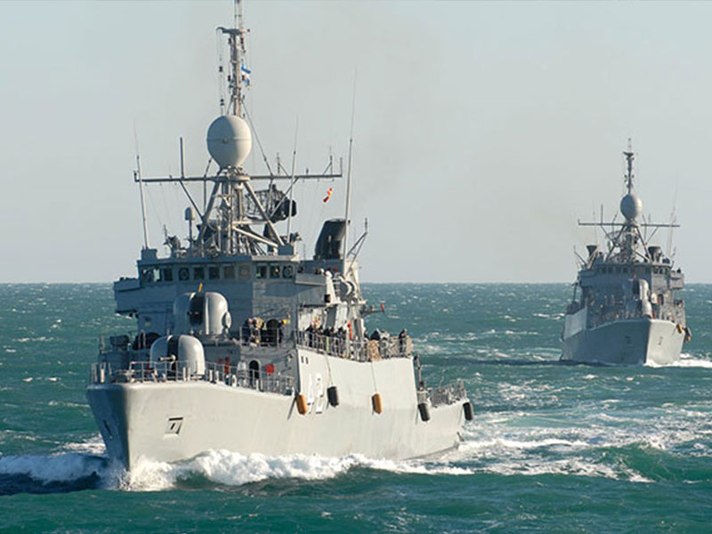
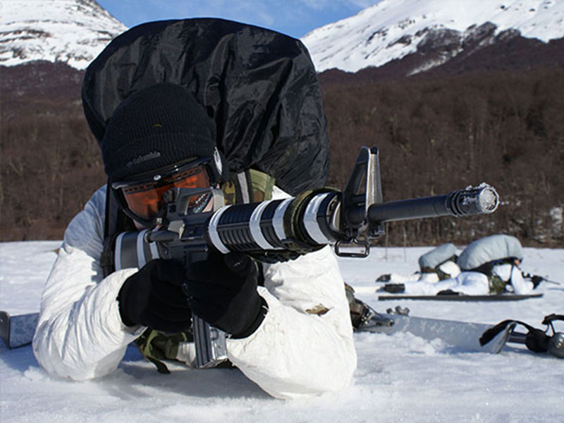

Oficiales Naval Comando
Carrera: Licenciatura en Recursos Navales para la Defensa Reconocimiento oficial y validez nacional otorgada por el MINISTERIO DE EDUCACIÓN, CULTURA, CIENCIA Y TECNOLOGÍA por RESOLUCIÓN N° 3380, de fecha 18 de Octubre de 2019.
Titulo Otorgado: Licenciado en Recursos Navales para la Defensa. Orientación Comando Naval. Orientación Comando Infantería de Marina


Licenciatura en Recursos Navales para la Defensa, orientación Comando Naval se capacita para:
- Planificar, organizar, dirigir, gestionar, evaluar y controlar procesos vinculados con la administración de recursos humanos y materiales, según su nivel jerárquico, tipo de unidades y organizaciones navales militares
- Aplicar en un buque las ciencias, tecnologías, marco jurídico y procedimientos, que sustentan el arte y la práctica de la navegación, pilotaje y maniobra, según su función y nivel jerárquico.
- Emplear los sistemas de armas navales, de comunicaciones, de navegación, de propulsión, de control de averías, auxiliares, eléctricos, informáticos y de maniobras marineras, desempeñando funciones en los diferentes puestos de combate y roles operativos, según su nivel jerárquico, en distintos tipos de buques, aeronaves navales u organizaciones navales militares, durante operaciones específicas, conjuntas o combinadas, desarrolladas en tiempo de paz, crisis o acciones de combate.
- Participar del planeamiento naval militar y aplicarlo según su nivel de conducción.
- Planificar, ejecutar y supervisar actividades de instrucción, adiestramiento operacional y físico para afrontar las exigencias del servicio naval militar.
- Gestionar información con clasificación de seguridad relacionada con el servicio naval militar, según su función y nivel jerárquico.
- Aplicar normas inherentes al servicio de guardias de seguridad y de orden interno en las distintas unidades navales militares, según su función y nivel jerárquico.
- Participar en el empleo del poder militar del Estado en defensa de la Constitución Nacional y los intereses vitales y estratégicos de la Nación en ámbitos específicos, conjuntos y combinados.
- Conducir y liderar personal y equipos de trabajo en distintos niveles y organizaciones militares. Aplicar los procedimientos vinculados con actuaciones disciplinarias y administrativas militares en el marco jurídico correspondiente.
- Ejercer funciones de docencia de nivel universitario en áreas de su competencia profesional.
- Participar en acciones de cooperación con organizaciones del Estado Nacional, Estados Provinciales u otras no pertenecientes a la Defensa Nacional, en el marco jurídico correspondiente.
Licenciatura en Recursos Navales para la Defensa Orientación Comando Infantería de Marina se capacita para:
- Planificar, organizar, dirigir, gestionar, evaluar y controlar procesos vinculados con la administración de recursos humanos y materiales, según su nivel jerárquico, tipo de unidades y organizaciones navales militares.
- Participar del planeamiento naval militar y aplicarlo según su nivel de conducción.
- Planificar, ejecutar y supervisar actividades de instrucción, adiestramiento operacional y físico para afrontar las exigencias del servicio naval militar.
- Gestionar información con clasificación de seguridad relacionada con el servicio naval militar, según su función y nivel jerárquico.
- Aplicar normas inherentes al servicio de guardias de seguridad y de orden interno en las distintas unidades navales militares, según su función y nivel jerárquico.
- Conducir fracciones de Infantería de Marina para el cumplimiento de misiones en operaciones anfibias, según su nivel jerárquico.
- Emplear los sistemas de armas, de comunicaciones, de navegación, informáticos y de medios anfibios y terrestres, desempeñando funciones en los diferentes puestos de combate y roles operativos, según su nivel jerárquico, en organizaciones de Infantería de Marina y navales militares, durante operaciones específicas, conjuntas o combinadas, desarrolladas en tiempo de paz, crisis o acciones de combate.
- Participar en el empleo del poder militar del Estado en defensa de la Constitución Nacional y los intereses vitales y estratégicos de la Nación en ámbitos específicos, conjuntos y combinados.
- Conducir y liderar personal y equipos de trabajo en distintos niveles y organizaciones militares.
- Aplicar los procedimientos vinculados con actuaciones disciplinarias y administrativas militares en el marco jurídico correspondiente.
- Ejercer funciones de docencia de nivel universitario en áreas de su competencia profesional.
- Participar en acciones de cooperación con organizaciones del Estado Nacional, Estados Provinciales u otras no pertenecientes a la Defensa Nacional, en el marco jurídico correspondiente.